Strona główna 5plus.edu.pl w schemacie FEAC32: ciemny granat, ciemny zielony, ciemny burgund.
To zrzuty prawdziwej strony z serwera z podmienionymi kolorami. Ilustracje Pawła nietknięte, produkcja bez zmian.
Sekcje na przemian: granat, zieleń, burgund, granat. Żółty tylko jako wypełnienie (przyciski, pasy) albo na ciemnym. Odręczne napisy na kremie mają ciemny burgund 6A2142, bo żółty ma tam kontrast 1,9:1.
Dziś (pierwsze ekrany, telefon):
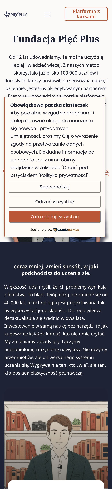
Po zmianie, telefon, cała strona:
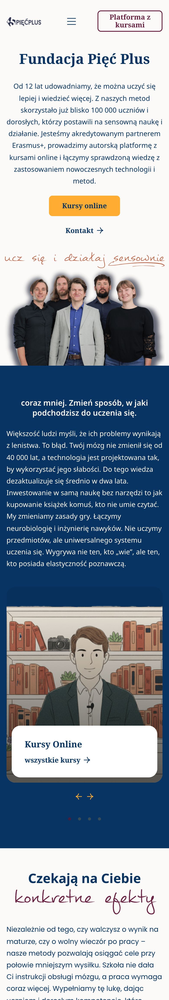
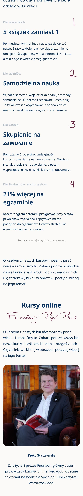
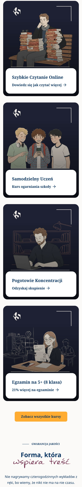
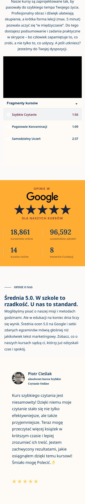
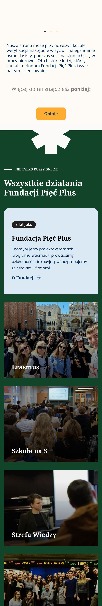
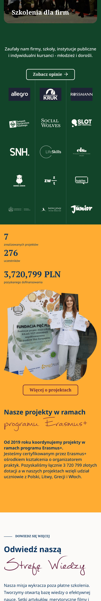
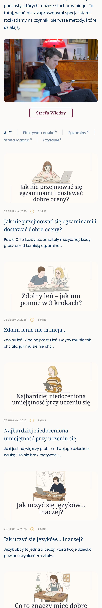
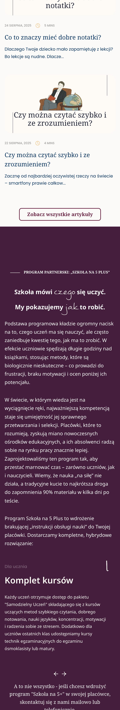
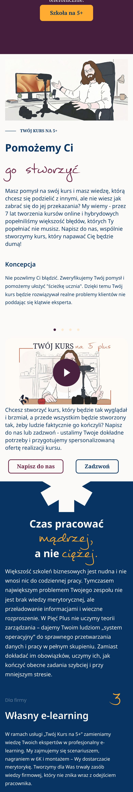
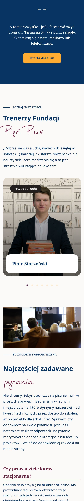
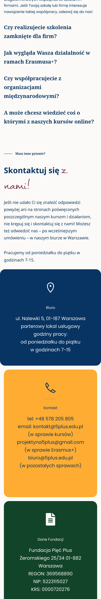
Dziś (desktop, góra):
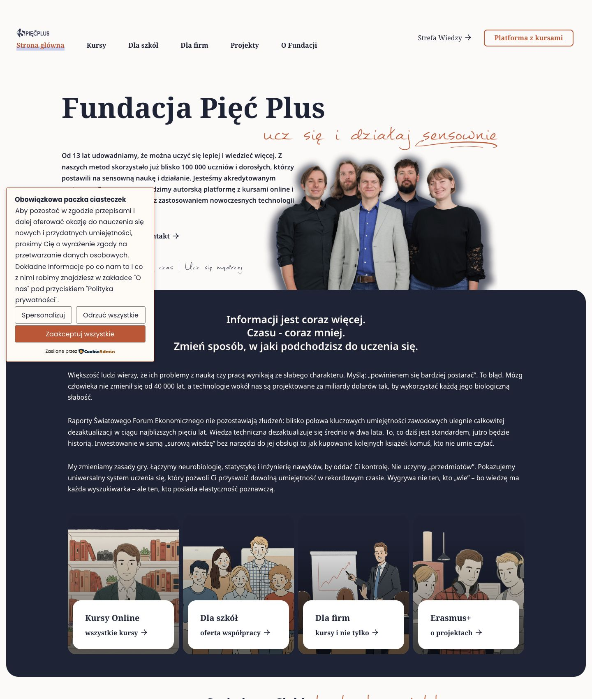
Po zmianie, desktop, cała strona:
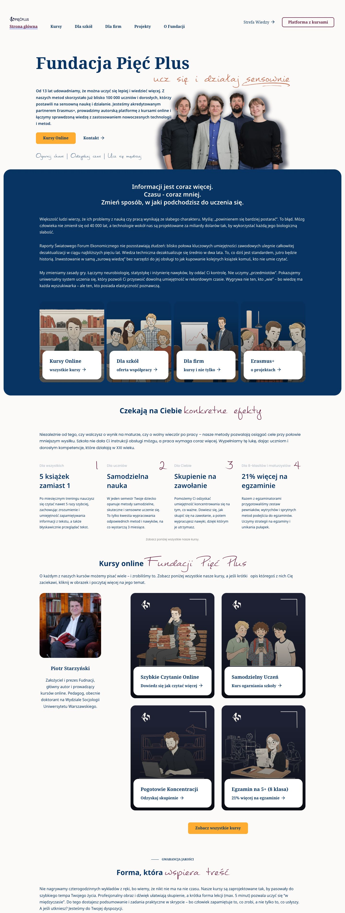
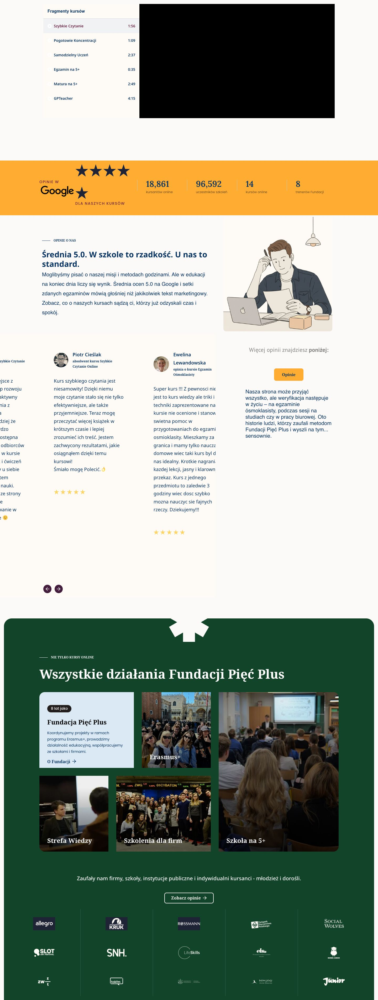
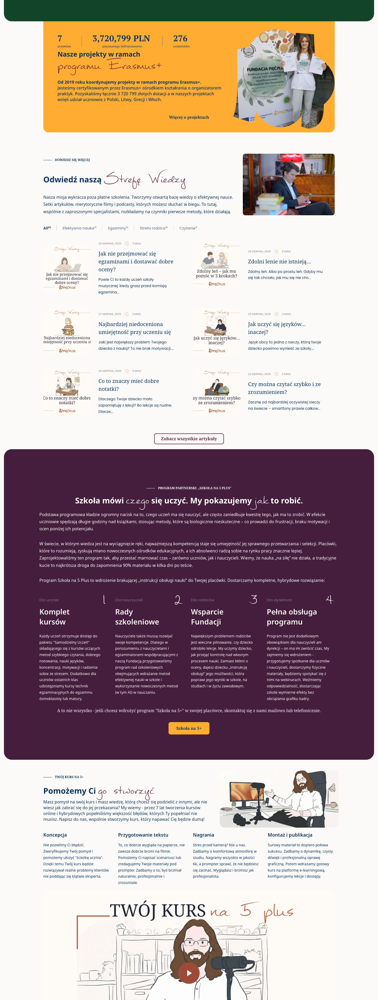
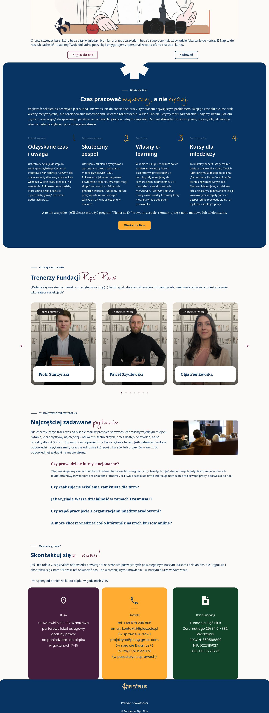